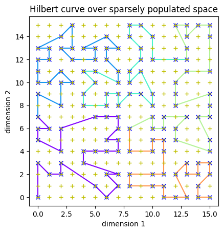

Hilbert Curves
When you want to cluster data together over multiple dimensions, you can use Z-Order. But a better algorithm is the Hilbert Curve, a fractal that makes a best attempt to keep adjacent points together in a 1-dimensional space.
From DataBrick’s Liquid Cluster design doc we get this graphical representation of what it looks like:
(Dotted line squares represent files).
A Hilbert curve has the property that adjacent nodes (on the red line, above) have a distance of 1. Note that a property of the Hilbert curve is the adjacent points on the curve are nearest neighbours in the original n-dimensional space but the opposite is not necessarily true. Not all nearest neighbours in the n-dimensional space are adjacent on the curve. How could they be if points have more than 2 neighbours in the original space?
The application of this in Big Data is that the data is now sorted. If we were to read through the files following the red line, then each node we encountered is one away from the last. Z-Ordering does not have this property.
In the diagram on the right, lines indicate contiguous data. Colours indicate different files.
Unlike the Hilbert curve at the top of this page, there are some large jumps. In fact, the average step is not 1.0 as for the Hilbert curve but 1.557 in this example - over 50% more!
 This greater efficiency of Hilbert curves is true even if we don't take the unlikely case that the data is tightly packed. In the following examples the data is more realistic and not every possible point (a red +) is actually associated with data (a blue circle).
To understand what is going on, we need to appreciate Gray Codes which is an alternative numbering system in binary where adjacent numbers only differ by one bit changing (see that parallel with Hilbert curves?).
For each bit, for each dimension, we create a mask from the Gray code and do some bit manipulation found here and we'll eventually have a bijective map ℤd → ℤ.
The jumps between adjacent data points is less extreme in Hilbert curves. You can see this by-eye if we look at a slightly larger space code here:
Typically, the jumps between data points are never more than a couple of positions (average of 1.433).
Now, compare this to a similar space using Z-Ordering: Z-Order over a similar sparse space
and you can see larger jumps between some data points. The average is 2.083 in this run. That’s 45% higher than in the Hilbert curve.
Hilbert curves are not currently implemented in Apache Iceberg but are in Databrick’s Delta Lake.